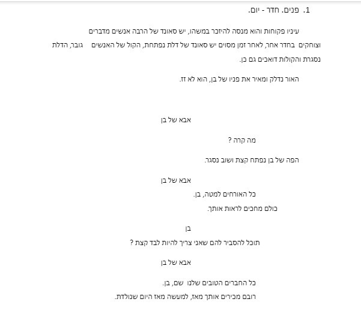
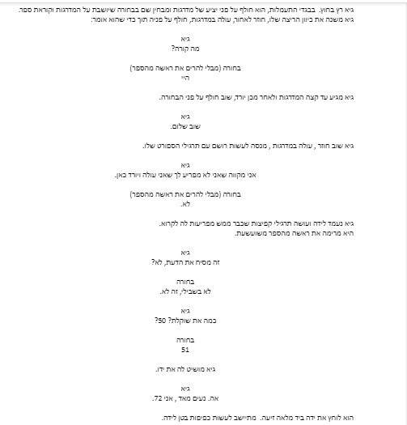

סצנה לדוגמא
איך הייתם מציעים לצלם את?
תרגיל שוטינג — סצנה מהבוגר
פנים. חדר — יום. עיניו פקוחות והוא מנסה להיזכר במשהו, יש סאונד של הרבה אנשים מדברים וצוחקים בחדר אחר...

📷 זוכרים שצילמנו מנקודת מבטו של ילד בן 5 כיצד הוא רואה את העולם?
- עליכם לצלם 5 תמונות שונות המצולמות מנקודת מבטו של ילד בן 17 וכיצד הוא רואה את העולם
חסר לנו גם כאן מידע, הרי אם נצלם מנקודת מבטו, כמו למשל בסרט הגברת באגם (1947) איך נדע שאכן מדובר על נער ב17, בחור בין 20, 30 או 50?
אם כך, מה עלינו לשאול את עצמנו בזמן שנרצה לצלם מנקודת מבטה של הדמות?
השאלה אשר אנו צריכים לשאול את עצמנו:
היא לא מה רואה הדמות מנקודת מבט, אלא מה היא חווה מנקודת מבטה?
(זוכרים — קולנוע מייצר חוויה רגשית)
למשל, אנו רוצים לצלם נער בן 17 המתבונן בנערה בת כיתתו העומדת בקצה המסדרון. אם נדע שהוא מאוהב בה ישפיע על השיקול שלכם כיצד לצלם אותה לעומת אם הוא כועס עליה?
דוגמה נוספת מעולם הקולנוע
את התחושה של היום הראשון ללימודים כולנו מכירים, אך האם כל דמות חווה אותו באופן דומה?
ילדות רעות — דמות של נערה מתבגרת שמעולם לא למדה בבית ספר קודם לכן
Mean Girls — Cady's first day of school
ילדות רעות — היום הראשון של קיידי בבית הספר
▶ צפו בסרטון ב-YouTubeשלדון הצעיר — דמות של ילד בן 9 ש"הוקפץ" לכיתה י'
אותו סיפור, אך החוויה הרגשית שונה שימו לב איך השינוי הרגשי לעתים מתרחש באותה סצנה:
סצנה מתוך הסדרה "על הפנים"
📝 תרגיל 2
- עליכם לצלם 5 תמונות שונות המצולמות מנקודת מבטו של ילד בן 17 ובעזרתכם לבטא את הבוקר הנורא אשר עובר עליו
- עליכם לצלם 5 תמונות שונות המצולמות מנקודת מבטו של ילד בן 17 ובעזרתכם לבטא את הבוקר הנפלא אשר עובר עליו
איזה כיף ללכת לראות סרט בקולנוע...
ארבע דמויות שונות, עושות בדיוק אותו דבר, אך האם כולן חוות את אותו הדבר? נכון. הבעות הפנים שונות, אך מה עוד שונה מתמונה לתמונה?


נקודת מבט — כמוקד רגשי של הסצנה
🎯 סיכום
להזכירכם, סצנה אינה נועדה רק כדי להעביר מידע ולקדם עלילה, אלא ליצור חוויה רגשית קולנועית.
אך כיצד נדע מהו הרגש אותו נרצה לבטא?
התשובה תלויה בהחלטתם של היוצרים, דרך איזו דמות תרצו לספר את הסיפור ובחירה זו למי שכבר הספיק לשכוח,
אינה דרך מי נראה את הסיפור (נקודת המבט של המצלמה) אלא דרך מי נחווה את הסיפור.
למשל: בחור פוגש בחורה, אחת מהסצנות הנפוצות בקולנוע,
האם תבחרו לספר את דרך נקודת מבטו של הבחור הביישן האוזר אומץ לגשת אליה או אולי דווקא תעדיפו בצד של הבחורה הפופולרית שלא מבינה מי זה מטריד אותה?
לא משנה במי תבחרו, אבל כן משנה שתשאלו את עצמכם את השאלות הבאות:
- מי הגיבור שלי (בסצנה, לא בסרט)
- מה הרגש שהוא חווה
- כיצד אצליח לבטא רגש זה